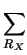
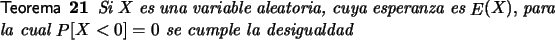
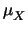
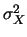
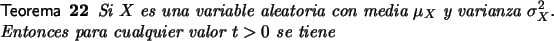

Desigualdades de Markov y Chebyshev
Si X es una variable aleatoria discreta con rango RX entonces es sencillo deducir la siguiente secuencia de desigualdades:| E(X) | = | xP[X = x] |
| = | ||
| xP[X = x] | ||
| tP[X = x] | ||
| = | tP[X |
Este análisis, que se puede hacer en forma equivalente para distribuciones continuas da lugar al siguiente teorema conocido como la desigualdad de Markov [2].

Esta desigualdad permite hacer aproximaciones vagas acerca del comportamiento de variables aleatorias tomando en cuenta únicamente la esperanza. Veamos el siguiente ejemplo.
Ejemplo 30
En una caja hay 10 bolillas rojas y 6 negras. Se extraen con remplazo 8 bolillas y se registra el número de bolillas rojas extraídas.
X sigue una distribución binomial
b(x;8, 10/16) y
usando la herramienta para binomiales, es simple verificar por
ejemplo que
P[X  6] = 1 - P[X
6] = 1 - P[X  5] = 0.3697.
5] = 0.3697.
Utilizando la desigualdad de Markov se obtiene que
P[X  6]
6]  5/6 = 0, 8333.
5/6 = 0, 8333.
Comparando estos dos valores nos damos cuenta que la cota que se obtiene por la desigualdad de Markov no necesariamente es buena.
Es importante notar que si en la desigualdad (6.1) utilizamos t = n obtenemos
Es decir la probabilidad de que los valores de una variable aleatoria estén a más de n veces la media es menor a 1/n.
Si además de la media o esperanza se conoce la varianza entonces existe la posibilidad de hacer acotaciones con un poco más de precisión. Supongamos que X es una variable aleatoria con esperanza y varianza  Si consideramos la variable aleatoria (X - )2, aplicando la desigualdad de Markov a esta variable, cuya esperanza es precisamente (3.9), se obtiene
Dado que
(X - )2  t2 es equivalente a
| X - |
t2 es equivalente a
| X - |  t se obtiene el teorema conocido como la desigualdad
de Chebyshev.
t se obtiene el teorema conocido como la desigualdad
de Chebyshev.

La desigualdad de Chebyshev permite acotar la probabilidad de que los valores de la distribución queden alrededor de la media. Estas aproximaciones no necesariamente son buenas, no obstante mejorar los resultados que se pueden obtener con esta desigualdad implicaría restringir mucho las hipótesis iniciales, como se verá en un ejemplo posterior.
Ejemplo 31
Una persona puede digitar un texto en un tiempo que sigue una distribución con media 50 minutos y desviación 10 minutos. Para estimar una cota para la probabilidad de que esta persona tarde entre 30 y 50 minutos se puede recurrir a la desigualdad de Chebyshev y se obtiene
Aún cuando este tipo de estimaciones pueden resultar innecesarias cuando se dispone de la distribución de probabilidad el ejemplo siguiente sirve para comparar los resultados que se obtienen usando la de la desigualdad (6.2).
Ejemplo 32
El tiempo que tarda un computador en resolver un problema sigue una distribución exponencial con media 2 minutos. Para estimar la probabilidad que el tiempo de solución de un problema al azar esté entre 0 y 6 minutos si utilizamos la desigualdad de Chebyshev obtenemos
Es decir con la desigualdad de Chebyshev obtenemos que la probabilidad de que el tiempo esté entre 0 y 6 minutos es superior a 0.75.
Si usamos la distribución en forma directa obtenemos que:
Lo que nos indica que las cotas que se obtienen de la desigualdad de Chebyshev pueden no ser muy buenas, no obstante como veremos no es tan fácil mejorar las cotas que se obtienen con esta desigualdad sin imponer restricciones adicionales.
El siguiente ejemplo, [2], es ilustrativo en ese sentido.
Ejemplo 33
Sea X una variable aleatoria discreta cuya distribución
de probabilidad se da en la siguiente tabla:
| x1 = - 2 | x2 = 0 | x3 = 2 | |
| P[X = x1] = 1/8 | P[X = x2] = 3/4 | P[X = x3] = 1/8 |
Es muy sencillo verificar que E[X] = 0 y que VAR[X] = 1
Si aplicamos la desigualdad de Chebyshev obtenemos que
que en este coincide con el valor pues
Este ejemplo indica que aún cuando las cotas obtenidas de la desigualdad (6.2) no siempre son buenas a veces son exactas.